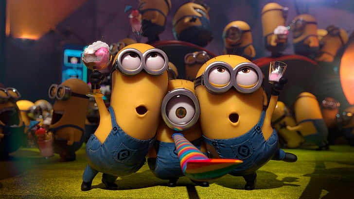

Minions is a 2015 American 3D computer-animated comedy film,serving as a spin-off prequel to the Despicable Me franchise. Produced by Illumination Entertainment for Universal Pictures, it was directed by Pierre Coffin and Kyle Balda, written by Brian Lynch, and produced by Chris Meledandri and Janet Healy.The film stars the voices of Coffin (as the Minions, including Kevin, Stuart, and Bob), Sandra Bullock, Jon Hamm, Michael Keaton, Allison Janney, Steve Coogan, and Jennifer Saunders, with narration by Geoffrey Rush. It was first foreshadowed in the end credits of Despicable Me 2 (2013), where Kevin, Stuart, and Bob, three of the Minions and the film's main characters, are seen auditioning for the film.
